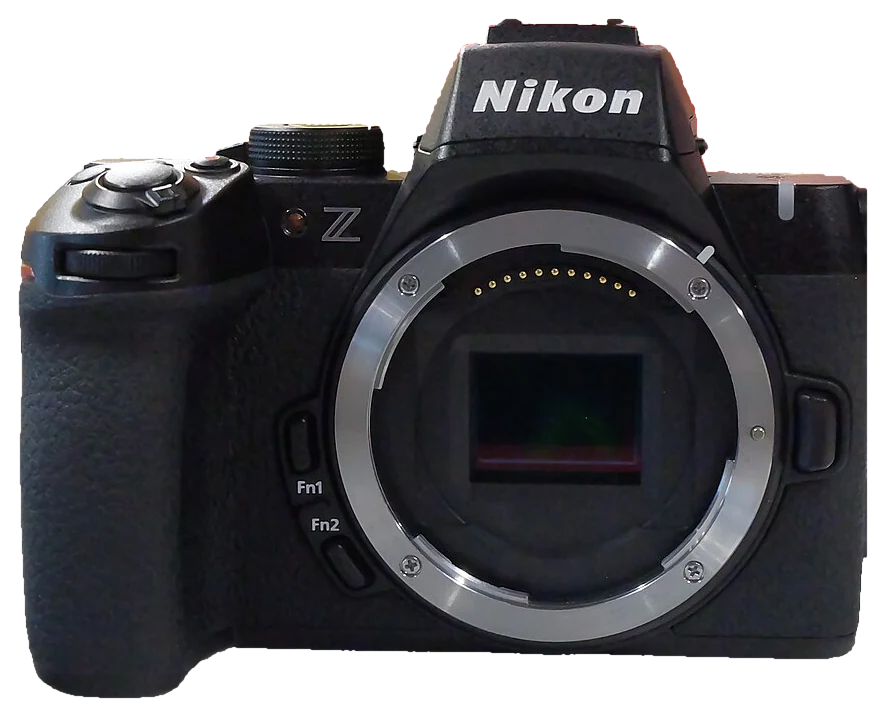
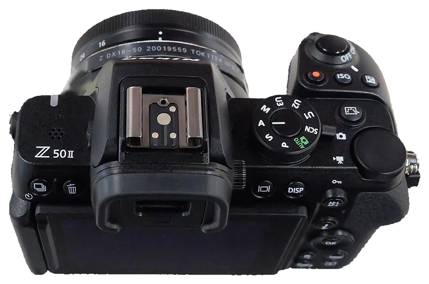
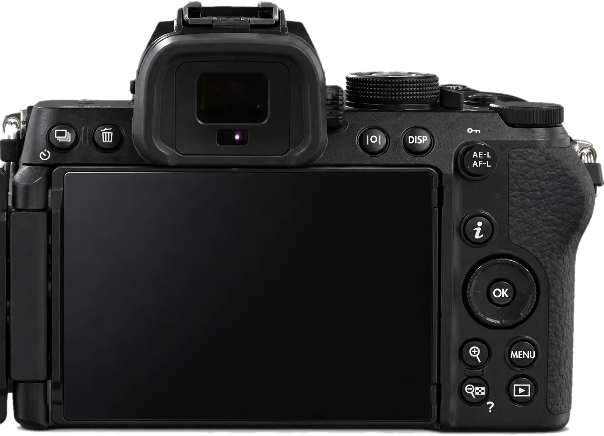

Ton appareil, bouton par bouton.
Touche un numéro : tu sais ce que c'est, à quoi ça sert, et quand t'en servir.



Vraies photos du Z50II. Fais glisser la photo pour voir tout l'appareil.
La batterie et la carte.
La batterie EN-EL25a
Environ 230 à 250 photos par charge (norme CIPA), ou 55 minutes de vidéo. Elle se recharge dans l'appareil par USB‑C, en 1 h 40 environ.
Prends une deuxième batterie pour une journée de photo.
La carte SD
SD, SDHC ou SDXC, en UHS‑I ou UHS‑II. Pour la vidéo, une carte UHS de classe 3 au minimum.
Formate chaque nouvelle carte dans l'appareil.
Pas besoin de tout apprendre.
La touche i
Les 12 réglages les plus utilisés au même endroit : style d'image, balance des blancs, qualité, mise au point, stabilisation, mesure… Plus rapide que MENU. Tu choisis son contenu (réglage perso f1).
Fn1 et Fn2
Maintiens et tourne une molette. Par défaut, Fn1 = balance des blancs, Fn2 = mode et zone de mise au point. Réattribuables (réglage perso f2).
Viseur ou écran
L'appareil bascule seul vers le viseur quand ton œil approche. La touche de mode moniteur force l'un ou l'autre.